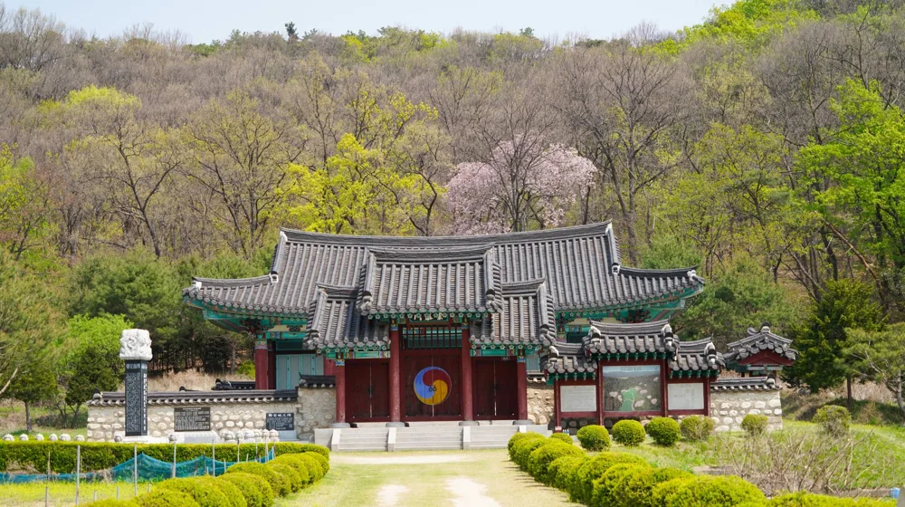

템플스테이 vs 산사 워케이션, 당신에게 맞는 선택은? 핵심 차이 5가지
사진: 정규송 Nui MALAMA / Pexels (무료 이미지, 출처 표기)
템플스테이와 산사 워케이션, 왜 헷갈릴까요?

고요한 산사에서 벗어나 새로운 경험을 찾는 분들이 많아지면서, 템플스테이와 산사 워케이션에 대한 관심도 함께 증가하고 있습니다. 두 가지 모두 사찰에서 진행되는 프로그램이라는 공통점 때문에 많은 분이 혼동하기 쉽습니다. 하지만 목적과 기간, 내용 면에서 분명한 차이가 있어, 나에게 맞는 프로그램을 정확히 알고 선택하는 것이 중요합니다.
이 글에서는 템플스테이와 산사 워케이션의 핵심적인 차이점을 명확하게 비교하고, 여러분의 상황과 필요에 따라 어떤 선택이 더 현명한지 구체적인 가이드를 제시해 드립니다.
핵심 비교: 목적부터 비용까지 5가지 차이점
한국불교문화사업단이 운영하는 템플스테이와 최근 인기를 얻고 있는 산사 워케이션은 겉으로는 비슷해 보이지만, 본질적인 지향점이 다릅니다. 다음 5가지 요소를 통해 명확한 차이를 파악해 보세요.
(2024년 8월 기준이며, 정확한 비용과 프로그램 내용은 각 사찰의 공식 홈페이지나 한국불교문화사업단 웹사이트에서 다시 확인하시길 권장합니다.)
나에게 맞는 선택은? 유형별 추천 가이드
두 프로그램의 차이점을 알았다면, 이제 어떤 것이 여러분에게 더 적합할지 판단해 볼 차례입니다.
템플스테이가 더 적합한 경우
- 짧은 기간 동안 일상에서 벗어나 집중적인 정신 수양과 휴식을 경험하고 싶을 때
- 바쁜 일정 속에서도 한국의 전통 불교 문화를 깊이 있게 체험하고 싶을 때
- 명상, 예불 등 사찰의 규칙적인 일과에 적극적으로 참여하며 마음을 비우고 싶을 때
- 디지털 기기에서 벗어나 온전한 디톡스 시간을 갖고 싶은 분
산사 워케이션이 더 적합한 경우
- 업무와 휴식을 동시에 효율적으로 병행하고 싶을 때
- 조용한 환경에서 집중적으로 업무에 몰두하며 창의적인 아이디어를 얻고 싶을 때
- 긴 기간 동안 자연 속에서 생활하며 천천히 몸과 마음을 치유하고 싶은 분
- 개인적인 루틴을 유지하면서도 사찰의 평화로운 분위기를 경험하고 싶은 분
템플스테이/산사 워케이션 신청 전 체크리스트
성공적인 경험을 위해서는 사전 준비가 중요합니다. 다음 사항들을 꼼꼼히 확인해 보세요.
- 목표 설정: 무엇을 얻어가고 싶은지 명확히 정합니다. (예: 스트레스 해소, 업무 효율 증진, 명상 체험 등)
- 사찰별 프로그램 확인: 각 사찰마다 특화된 프로그램과 분위기가 다릅니다. 예를 들어, 일부 사찰은 외국인 친화적이거나, 특정 명상 프로그램이 유명할 수 있습니다.
- 편의시설 확인: 특히 산사 워케이션의 경우, 인터넷 환경, 개인 업무 공간, 숙소 컨디션 등을 미리 확인하는 것이 좋습니다.
- 개인 준비물: 세면도구, 편한 옷, 여벌 옷, 개인 약품, 충전기 등을 챙깁니다. 사찰 특성상 개인 컵이나 수통을 준비하는 것이 권장될 수 있습니다.
- 규칙 및 예절 숙지: 사찰 내에서의 복장, 행동 규칙, 식사 예절 등을 미리 알아두면 더욱 편안하게 참여할 수 있습니다.
Q&A: 자주 묻는 질문
템플스테이 및 산사 워케이션에 대해 자주 궁금해하는 질문들을 모아봤습니다.
Q1: 인터넷 사용이 가능한가요?
A1: 템플스테이는 프로그램의 특성상 디지털 디톡스를 권장하며 인터넷 사용이 제한되거나 와이파이가 없는 경우가 많습니다. 반면 산사 워케이션은 업무를 병행하는 만큼 대부분 와이파이와 작업 공간이 제공됩니다. 신청 전 해당 사찰에 확인하는 것이 가장 정확합니다.
Q2: 불교 신자가 아니어도 참여할 수 있나요?
A2: 네, 두 프로그램 모두 종교와 관계없이 누구나 참여할 수 있습니다. 불교 문화에 대한 이해와 체험을 목적으로 하므로, 신자가 아니어도 환영받습니다.
Q3: 식사는 어떻게 제공되나요? 채식만 가능한가요?
A3: 대부분의 사찰에서는 사찰 음식(채식 위주)으로 식사를 제공합니다. 발우공양(공양 그릇에 담아 남김없이 먹는 식사법)을 체험하기도 합니다. 특별한 알레르기나 식단 제한이 있다면 사전에 사찰 측에 문의해야 합니다.
Q4: 아이와 함께 참여할 수 있는 프로그램도 있나요?
A4: 일부 사찰에서는 어린이, 청소년 또는 가족 단위 템플스테이 프로그램을 운영합니다. 산사 워케이션은 성인 개인 참가자를 위주로 하지만, 가족 단위 워케이션 프로그램을 제공하는 곳도 있으니 개별 사찰의 공지를 확인해 보세요.
🔗 이 글도 함께 보면 좋아요: 산사 워케이션, 놓치면 후회? 예약부터 준비물까지 완벽 가이드